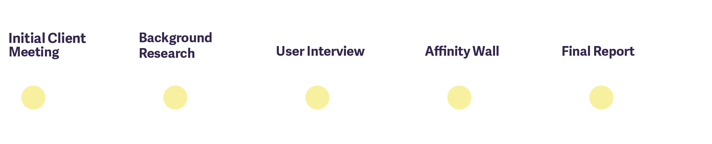
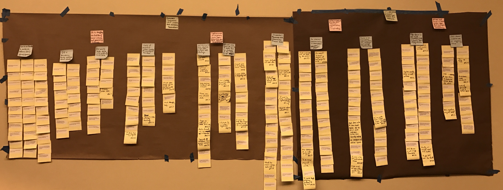

UX consulting for an civic data startup in Detroit
Data Driven Detroit (D3) is a data analysis startup with a focus on working with civic data. They aim to provide information to support evidence based decision making in public institutions. Additionally, they aim to increase accessibility of data to the public and the overall data literacy in Detroit and its surrounding areas.
Data Driven Detroit came to us with the challenge of how to improve they could improve the development process of their internal data warehouse. As their startup grew and their datasets became more complex, their current storage methods were no longer sufficient. As such, they needed a strategy for the design and development of a new data warehouse.
We used a user-centered approached in our consulting, and offered recommendations on how they should approach the project based on the structure of their organization and the wants and needs of their employees.
We approached the problem from a human-centered prespective, using an contextual inquiry process.
We first with our client and were introduced to of their key employees. Afterwards, our group select five important topics in the client’s industry to conduct background research and generate interview scripts to talk with employees.
We reached out directly to D3’s senior employees to schedule an interview focused on understanding their relationships and responsibilities within the organization. After each interview, our group met to debrief and share discoveries
Once all interviews were done, we constructed an affinity wall, a qualitative data method which sorts data points by theme so that we could identify the key issues that D3 had with designing their data warehouse project. Based on the issues identified by the affinity wall, our group brainstormed possible recommendations to give to the client.
Our final deliverable to our client was consulting report in which we shared our methodology, and a detailed explanation of all of our key findings and recommendations. Our report was well received by D3 and we were informed that several of our recommendations have been given serious thought for implantation.
A full copy of the consulting report is available upon request.